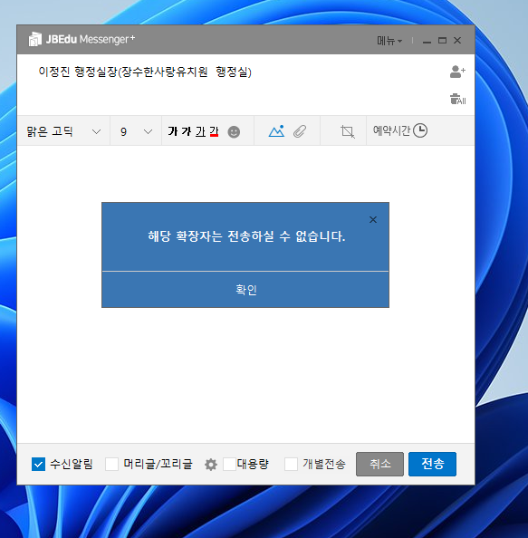
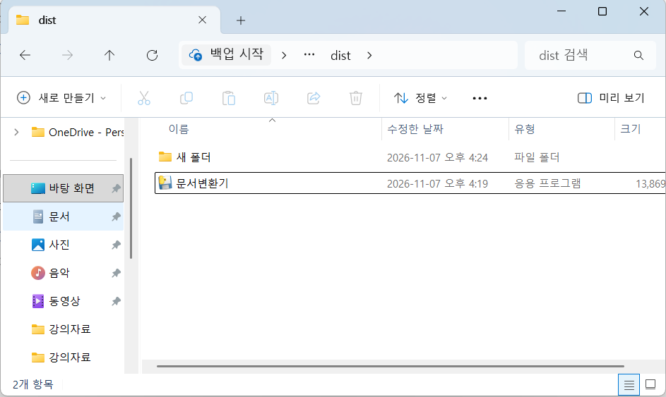
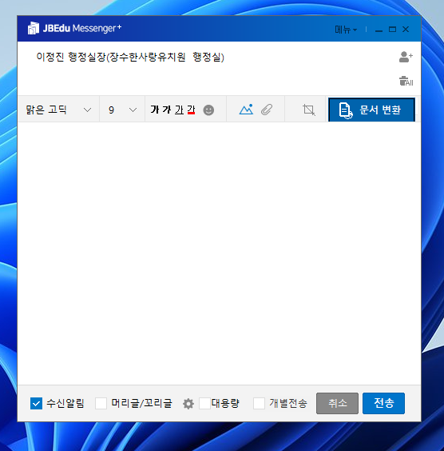
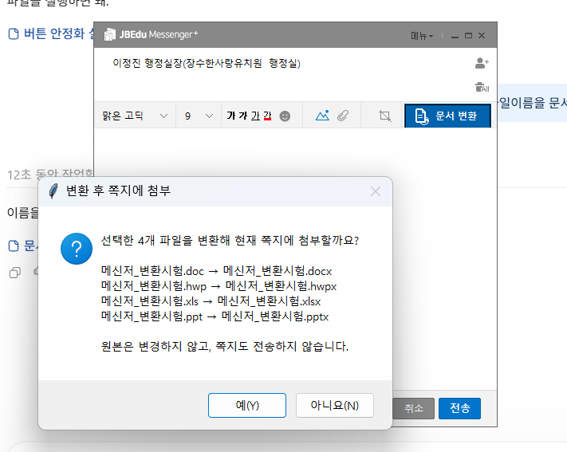

네 가지 문서 형식 변환
HWP·XLS·DOC·PPT를 각각 HWPX·XLSX·DOCX·PPTX로 변환합니다.
JB메신져에서 전송할 수 없는 HWP·XLS·DOC·PPT 파일을 HWPX·XLSX·DOCX·PPTX로 변환해 현재 쪽지에 첨부하는 Windows 프로그램입니다.
재생 버튼을 눌러 변환과 첨부 과정을 확인해 보세요.
JB메신져에서 문서변환 버튼을 눌러 파일을 변환하고 쪽지에 첨부하는 과정을 보여줍니다.
HWP·XLS·DOC·PPT 파일을 그대로 넣으면 확장자 안내가 나타납니다. 문서변환기를 사용하면 메신져에서 지원하는 최신 형식으로 바꿔 첨부할 수 있습니다.

HWP·XLS·DOC·PPT를 각각 HWPX·XLSX·DOCX·PPTX로 변환합니다.
파일 선택 창에서 여러 문서를 골라 함께 변환할 수 있습니다.
변환 결과를 확인하고 동의하면 작성 중인 쪽지에 첨부합니다. 원본 문서는 그대로 유지됩니다.
한컴오피스 또는 MS Office가 설치된 Windows 10·11 PC에서 사용하세요.
문서변환기를 내려받아 실행합니다. 설치 과정 없이 실행하는 프로그램입니다.

쪽지 작성 창의 문서 변환 버튼을 누르고 변환할 파일을 하나 또는 여러 개 선택합니다.

변환될 확장자를 확인하고 예를 누릅니다. 변환한 파일이 현재 쪽지에 첨부됩니다.

기존 첨부 오류부터 변환 버튼과 첨부 확인까지 실제 화면을 담았습니다.
Windows 10·11용 · 한컴오피스 또는 MS Office 필요